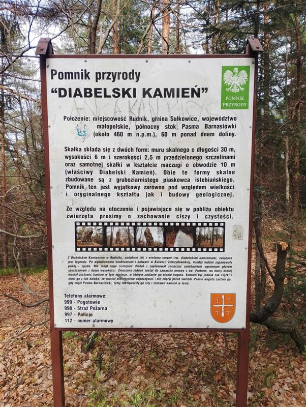

Legenda o Diabelskim Kamieniu:
• Ze starym głazem, który od wieków spoczywa na skraju Rudnika, wiąże się niejedna opowieść. Najsłynniejsza z nich mówi o diable, który zapragnął zbudować w tym miejscu drugie piekło. Założył się z samym Panem Bogiem, że zdąży je wznosić szybciej, niż Bóg stworzy drugie niebo.
• Czart nie próżnował – z dna morza wydobył ogromny kamień i ruszył z nim przez noc, by rozpocząć dzieło. Ale gdy był już blisko, jeszcze zanim postawił pierwszy fundament, zapiał kogut jednego z gospodarzy z Rudnika. Był to znak, że noc dobiegła końca. Słońce zaczęło wspinać się na niebo, a diabeł musiał porzucić swoje plany. Kamień upuścił i z wściekłością zniknął. Głaz został — milczący świadek diabelskiej przegranej — i stoi tam po dziś dzień.
• Druga, nie mniej tajemnicza legenda głosi, że jeśli podczas pełni księżyca, dokładnie o północy, obejdzie się ten głaz dziewięć razy, a potem zajrzy pod niego, można ujrzeć diabła. Siedzi tam w cieniu, skryty, i knuje, jakby tu Rudniczanom zaszkodzić...
Powrót
Informacje
Historia
Ciekawe Miejsca
Galeria